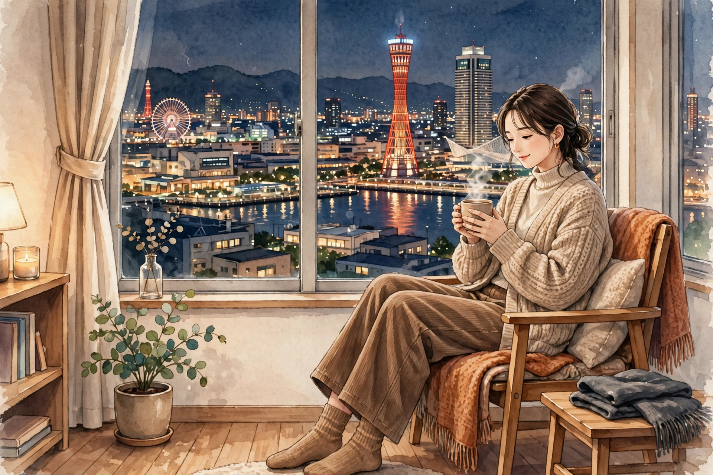

三ノ宮で正月疲れが気になるとき｜頭の重さと向き合う過ごし方セルフケア

正月が明けると、三ノ宮の街もいつもの顔に戻り、初詣や帰省、親戚づきあいを終えたあと、頭が重く感じることはありませんか。年末年始は、ふだんより夜更かしが続いたり、ごちそうを囲む時間が長くなったり、移動や人づきあいで気づかないうちに疲れがたまったりしやすい時期です。頭の重さは、そうした正月ならではの過ごし方と重なって気になりやすいものの一つです。ここでは、正月疲れと頭の重さについて、考えられる要因、休み明けの過ごし方とセルフケア、受診を考える目安を整理してお伝えします。
頭の重さとは — 正月明けに気になりやすい頭の重だるさ
ここでいう頭の重さは、病名ではなく、頭全体が重く感じたり、すっきりしない感じが続いたりする状態を指す、日常的によく使われる言葉です。感じ方には、頭がぼんやりと重く感じる、目の奥が重いように感じる、首や肩の張りと一緒に感じる、といった表れ方があり、程度には個人差があります。正月明けは、「初詣のあと人混みを歩き回ったら、頭が重くなってきたように感じる」「夜更かしが続いた翌朝、頭がすっきりしない」「帰省の移動のあと、頭の重さが気になるようになった」という声もあります。同じ正月明けでも、お腹の張り感が中心の方もいます。年末年始の食べ過ぎとお腹の張り感については、コラム「三ノ宮で年末年始の食べ過ぎ・生活リズムの乱れに気になるお腹の張り感｜要因の整理とセルフケア、受診の目安」でも紹介しています。頭の重さそのものの考え方は、頭の重さのお悩み別ケアページにもまとめています。ここでは原因を一つに決めつけず、要因と休み明けの付き合い方を整理します。
正月疲れと重なりやすい要因
要因のひとつは、生活リズムの乱れです。年末年始は、夜更かしや朝寝坊、食事の時間のずれが続きやすく、ふだんのリズムから外れた日が何日も重なります。寝る時間と起きる時間が日によって大きくずれると、目覚めたときに頭が重く感じられる場合があるとされます。初詣や帰省で早起きした日と、ゆっくり寝た日が交互に続くと、体のリズムが整いにくいと感じる方もいます。
移動と人づきあいの疲れも重なる場合があります。帰省や初詣、親戚づきあいでは、電車や車での移動、人混みの中を歩く時間、気をつかう会話が続きます。移動中は同じ姿勢で座り続けることが多く、首や肩に負担がかかりやすいとされます。初詣の人混みでは、周囲に気を配りながら歩くため、無意識に肩に力が入ったままになる方もいます。気をつかう場面が続いたあとは、気持ちの疲れが頭の重さとして感じられる場合もあるとされます。
食べ過ぎや飲み過ぎも重なる場合があります。年末年始はごちそうやお酒を囲む機会が多く、ふだんより食べ過ぎたり、飲み過ぎたりしやすい時期です。胃腸に負担がかかった日は、体の重だるさと一緒に頭の重さを感じる方もいます。お酒を飲んだ翌日は、眠りが浅くなり、朝の頭の重さが気になる場合があるとされます。水分をとる機会が少なくなることも、頭の重さと重なって感じられる場合があります。
寒さと室内の乾燥も重なる場合があります。1月の三ノ宮は冷え込みが厳しく、屋外では首もとを冷やしやすく、室内では暖房で空気が乾燥しやすくなります。首まわりが冷えると、首から肩にかけて力が入ったままになりやすく、頭の重さと重なって感じられる場合があるとされます。暖房のきいた室内で長時間過ごすと、のどや目の乾きと一緒に頭の重さを感じる方もいます。東洋医学では、頭は全身の巡りが集まる場所とされ、首まわりの滞りが頭の重さにもつながると考えられてきました。気になりやすい条件をメモしておくと、正月明けの過ごし方を眺める参考になります。
休み明けの過ごし方とセルフケア
まず、生活リズムを少しずつ戻すことから見直してみてください。起きる時間をふだんの時間に近づける、朝に日の光を浴びる、夜は寝る1時間ほど前からスマートフォンやテレビから離れる、といった小さな工夫が目安になります。寝だめをしようと昼まで寝てしまうと、かえってリズムが戻りにくいと感じる方もいます。朝食をとることも、1日のリズムを整えるきっかけになるとされます。
体を温めてほぐす時間も取り入れてみてください。湯船にゆっくりつかって首元まで温めると、首や肩の張りが和らぎやすく感じられる場合があるとされます。熱すぎるお湯は肌の乾燥を進める場合があるため、40度前後のお湯に肩までつかるのが目安です。湯船につかる時間がない日は、温めたタオルを首の後ろに当てる、温かい飲み物を飲みながら少し体を休める時間をつくる、といった小さなケアも取り入れやすい方法です。首を動かすときは、痛みを我慢して無理に回さず、気持ちよい範囲にとどめることが続けるうえでの目安になります。
仕事始めの日の過ごし方も見直してみてください。デスクワークが再開する日は、1時間に一度は席を立って体を伸ばす、画面を見る時間を区切ってときどき遠くを見る、といった工夫が取り入れやすい方法とされます。初詣や帰省の荷物を整理する日は、重い荷物を一度に運ばず、小分けにして運ぶのも、体への負担を減らす目安になります。頭の重さが気になる日は、無理に予定を詰め込まず、早めに休む日をつくることも大切です。
受診を考える目安
頭の痛みが強い、吐き気を伴う、視界の異常や手足のしびれがある、発熱を伴う、転倒や打撲のあとから症状が出た、安静にしていても症状が続く、頭の重さが数週間以上続く、または少しずつ強くなっている、日常生活や仕事に支障が出ている——こうした場合は、自己判断で様子を見続けず、医療機関への相談をご検討ください。頭の症状は、頭以外の体の変化で表れる場合もあるため、原因を一つに決めつけずに相談することが目安になります。
頭の重さが気になり始めた時期や、正月休みの過ごし方、痛みやしびれの有無をメモしておくと、医師に伝えやすくなります。当店の施術はリラクゼーションを目的としたもので、症状の診断・治療を行うものではありません。効果には個人差があり、特定の症状の改善や治療を保証するものではありません。気になる症状があるときは、まず医療機関で相談したうえで、日常のケアの一つとしてサロンのご利用をお考えください。
三ノ宮で、正月明けに頭を休める時間を
ステラスピカは、神戸市中央区琴ノ緒町2-3-5 ネオダイキョー三宮606号室（JR三ノ宮駅東口徒歩5分）の女性専用・完全個室サロンで、開院済みです。料金はオイルマッサージ＋美容整体の90分コース10,000円（税込）のみ、営業時間は月〜土17:00〜22:00（日曜休み）、完全予約制です。施術歴30年の施術者が、施術前にカウンセリングで当日の体調をうかがい、施術後にセルフケアのポイントをお伝えします。ご予約はLINE公式アカウントから承っています。正月明けに頭の重さが気になるときは、無理のない日程でどうぞ。
ステラスピカ（三ノ宮） — 女性専用、90分 10,000円、月〜土17:00〜22:00、完全予約制です。